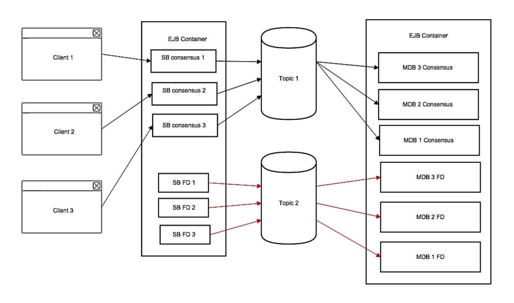

Introduction to Consensus Problem

The consensus problem is an agreement problem. It’s an abstraction of a class of problems where processes strart with their “opinion” and then agree on a common opinion. Formally, in the consensus problem, the correct processes propose a value and all the processes have to decide among the proposed values a common one. In the end all the outputs coming from the processes should be identical, even if one or more processes has failed.
The requirements of the consensus problem are:
- Agreement: the final decision of all the correct processes should be identical
- Validity: the value of the final decision should be taken from the proposed values
- Integrity: every process decides just one time
- Terminator: every correct (non-faulty) process sooner or later assign a value to the decision variable
The consensus is defined in terms of 2 functions: propose(v) and decide(v). When a process executes propose(v), it proposes the value v. When a process executes decide(v), it decides the value v.
One of the essential hypothesis of the consensus problem is that every entity of the system should know exactly the status of activity or fault of any other peer. This property is not implicitly verified within the asynchronous communication systems, indeed the authors (Fischer, Lynch and Patterson)[https://www.the-paper-trail.org/post/2008-08-13-a-brief-tour-of-flp-impossibility/] have showed that there is no deterministic algorithm that solves the Consensus problem in a asynchronous system that could have a single process fault.
The problem is that in such a system a fault process cannot be distinguished from an extremely slow process. The impossibility from the non-faulty processes to define with accuracy which process is actually failing, prevent the system from achieving the Consensus. A method to solve this problem is to extend the asynchronous system with a Fault Detection Algorithm.